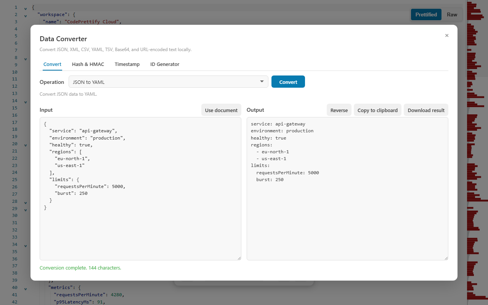

Epoch input
A bare number from a log line
The value is below 100,000,000,000, so auto-detection reads it as Unix seconds. No format picking, no guessing which log used which unit.
1786699800Paste an epoch value — Unix seconds or milliseconds — or an ISO 8601 string, press Enter, and read the same instant as UTC ISO 8601, Unix seconds, Unix milliseconds, and your local system time. The Timestamp tab of CodePrettify’s Data Converter runs entirely on your device.

Most timestamp questions are really four questions: what is this instant in UTC, in epoch seconds, in epoch milliseconds, and on my own clock? One conversion answers all of them.
The value is below 100,000,000,000, so auto-detection reads it as Unix seconds. No format picking, no guessing which log used which unit.
1786699800UTC for correctness, epoch values for code and queries, local time for reading it as a human.
UTC ISO 8601 2026-08-14T09:30:00Z
Unix seconds 1786699800
Unix milliseconds 1786699800000
Local time 2026-08-14 11:30 (example: UTC+02:00)Enter any epoch or ISO 8601 value, or press Use current time to fill the present moment in milliseconds.
Enter converts directly on the Timestamp tab — no mouse trip to a button.
UTC ISO 8601, Unix seconds, Unix milliseconds, and local system time appear together.
Conversion runs locally in the extension launcher, in any viewer tab, or in the Windows app. Epoch values copied from production logs, tokens, or database rows are never uploaded to a web service.
Seven short exercises cover the whole Timestamp tab, including the edge cases — negative values, fractions, and strings that deserve rejection.
Open Data Converter from More Actions or the Command Palette in a viewer tab, from Tools in the Windows app, or directly from the extension launcher. The dialog has four tabs — Convert, Hash & HMAC, Timestamp, and ID Generator — and the arrow keys cycle between them.
Paste 1786699800 and press Enter. Because the absolute value is below 100,000,000,000, it is treated as seconds. Confirm the UTC result reads 2026-08-14T09:30:00Z and that the local-time line matches your system clock’s timezone.
Now paste 1786699800000. The value exceeds the detection boundary, so it is read as milliseconds — and every output matches the previous step. This is the fastest way to confirm which unit a log or API actually uses.
Paste 2026-08-14T11:30:00+02:00 and press Enter. The explicit +02:00 offset makes the instant unambiguous, so the UTC output is again 09:30:00Z. A trailing Z works the same way, and ISO seconds and fractions (up to nine digits) are optional.
Try 2026-08-14 11:30 without any timezone. The converter rejects it rather than silently assuming UTC or your local zone — a wrong assumption here shifts every derived value by hours. Add Z or an explicit ±HH:MM offset and retry.
Press Use current time. The input fills with the present moment in milliseconds; press Enter to expand it into all four representations. Handy when you need “now” as an epoch value for a query or a token expiry check.
Convert -86400 — negative pre-1970 values are accepted, and it resolves to 1969-12-31T00:00:00Z. Convert 1786699800.5 — fractional Unix values are accepted, and the half second appears in the millisecond output. For far-future dates or early-epoch millisecond values, choose the unit explicitly instead of relying on auto-detection.
Before pasting a converted value into code, a query, or a bug report, confirm these points.
Z or an explicit UTC offset.Z for UTC±HH:MM offsetsUse current time fills the present moment in milliseconds — a quick source for “now” when writing queries or checking expiries.
Auto-detection covers the common cases; the table shows where it applies and where an explicit unit choice is the safer move.
| What you enter | How it is interpreted | Why |
|---|---|---|
1786699800 | Unix seconds → 2026-08-14T09:30:00Z | Absolute value below 100,000,000,000 is treated as seconds. |
1786699800000 | Unix milliseconds → the same instant | Values above the boundary are treated as milliseconds. |
-86400 | One day before the epoch → 1969-12-31T00:00:00Z | Negative pre-1970 values are accepted. |
1786699800.5 | Fractional seconds → the half second lands in the millisecond output | Fractional Unix values are accepted. |
86400000 meant as milliseconds | Auto-detected as seconds — choose the unit explicitly | Early-epoch millisecond values fall below the detection boundary. |
2026-08-14T11:30:00+02:00 | ISO 8601 with an explicit offset → 09:30:00Z | The offset makes the instant unambiguous. |
2026-08-14 11:30 | Rejected | No timezone — add Z or a ±HH:MM offset instead of letting a tool guess. |
The Timestamp tab is the precise instrument, but epoch values show up everywhere — so the rest of the toolset helps too.

Structured JSON adds human-readable timestamp hints for integer Unix values dated 2000–2050 and for ISO-like strings — you often read the date without opening the converter at all.
The ID Generator tab creates UUID v7 and ULID values that embed the current Unix-millisecond timestamp, so generated identifiers sort by creation time.
The Data Converter behaves identically in the browser extension and the Windows app, so one set of habits covers both.
Auto-detection treats absolute values below 100,000,000,000 as Unix seconds and larger values as milliseconds, so everyday timestamps sort themselves out. Choose the unit explicitly for far-future dates or early-epoch millisecond values, where magnitude alone cannot tell the two apart.
A date string without a timezone is ambiguous — 2026-08-14 11:30 names a different instant in every region. The Timestamp tab rejects such strings instead of silently assuming a zone. Add Z for UTC or an explicit offset such as +02:00 and it converts.
Yes. Conversion runs entirely on your device — in the extension launcher, in any viewer tab, or in the Windows app. Nothing is uploaded, so timestamps from private logs and tokens never leave your machine.
Every conversion returns the same four results: UTC ISO 8601, Unix seconds, Unix milliseconds, and the time in your system’s local timezone. Convert once and read whichever representation the destination needs.
Convert epoch seconds, milliseconds, and ISO 8601 on your own device — four outputs per conversion, Enter to convert, nothing uploaded.